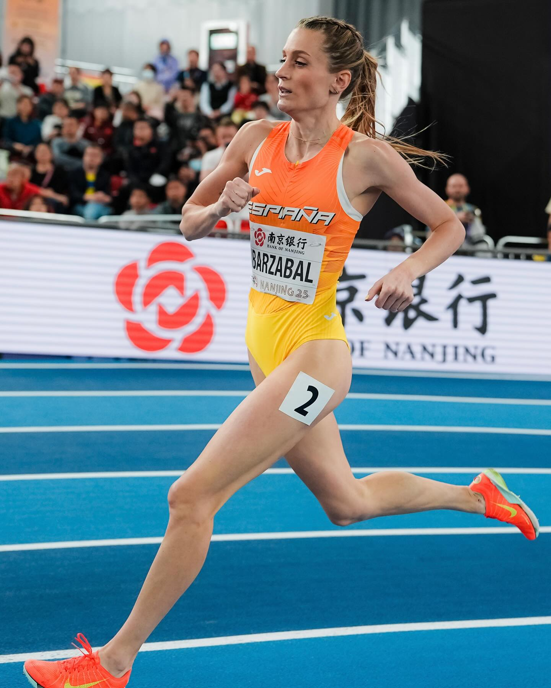

atletismorfea

@lorea_ibarzabal es séptima del mundo
Semifinalista en Nanjing, a un suspiro de la gran final, finaliza con 2:02.57 que le dan la séptima posición global#WorldIndoorChamps #EspañaAtletismo #PasiónPorCompetir2 días